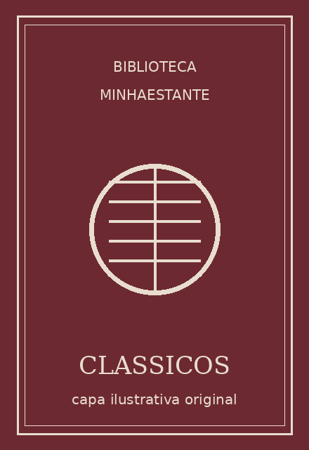
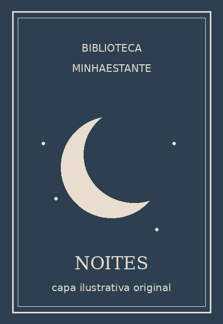
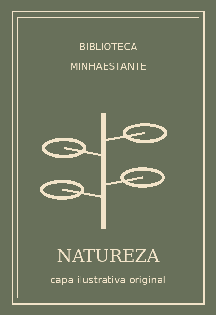

Leitura clássica
Quero ler · 0%
MinhaEstante organiza livros, progresso de leitura, notas e comentários. Esta é a apresentação visual do projeto para o GitHub Pages.

Quero ler · 0%

Lendo · 25%

Lido · 100%
Esta página é uma prévia visual. Os arquivos de desenvolvimento estão no repositório; o cadastro e a edição com banco de dados exigem execução local no XAMPP com PHP e MySQL. A versão Python/Flask está documentada separadamente para POO.